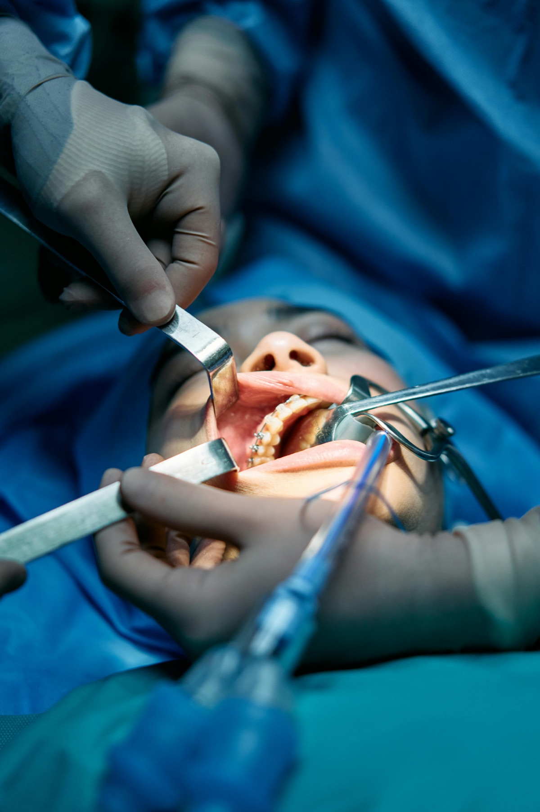
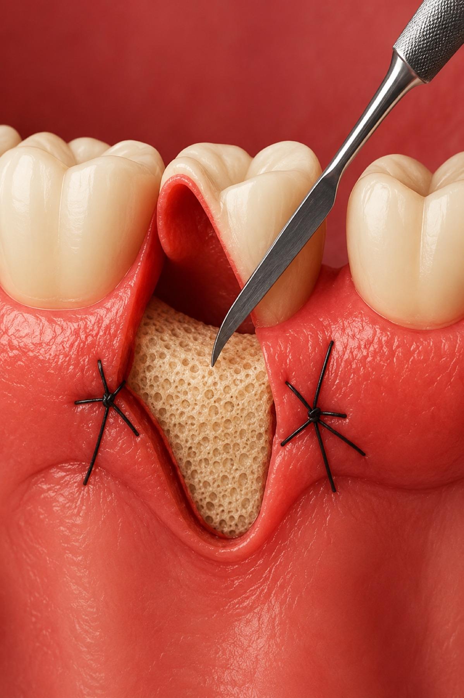

01
Cirurgias odontológicas
Procedimentos realizados para tratar alterações bucais que necessitam de intervenção cirúrgica, sempre com planejamento individualizado, cuidado técnico e foco na segurança e conforto do paciente.

02
Cirurgia periodontal
A cirurgia periodontal é voltada ao tratamento das gengivas e dos tecidos que sustentam os dentes. Pode ser indicada em casos de doenças periodontais, retrações gengivais, bolsas periodontais ou necessidade de melhorar a saúde e a estabilidade da região ao redor dos dentes.